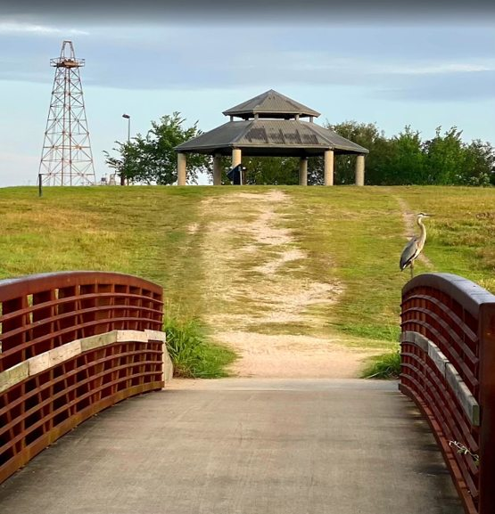
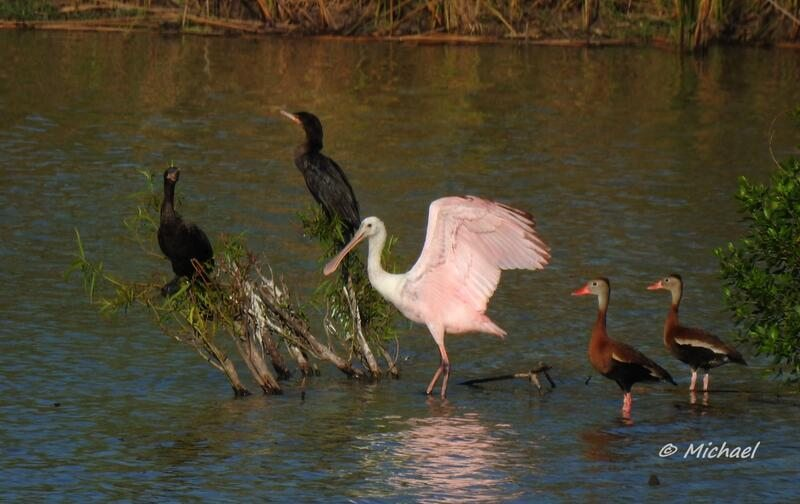

A volunteer-led Texas nonprofit with more than a decade of free live music at Willow Waterhole and one mission: free live music for everyone.
Levitt Houston is being created as a welcoming place where neighbors can gather for free concerts, families can spend time together, and visitors can discover one of Southwest Houston’s most distinctive outdoor settings.
“Music connects us. Music uplifts us. Music creates community.” Levitt Pavilion Houston
Our volunteer board brings a shared commitment to community-building, equity, and the arts. Together, they help guide Levitt Pavilion Houston’s vision and growth.
Levitt Houston grew from more than a decade of free music at Willow Waterhole. MusicFest has been bringing student musicians, professional performers, families, and neighbors together in Southwest Houston since 2012, and that community response is what made a permanent Levitt venue possible here.
That history helped establish the community support for a permanent Levitt venue. Today, Friends of Levitt Pavilion Houston is building the organization that will fund, program, and operate it.

Willow Waterhole Greenway — the future pavilion’s front yard.

Wildlife at Willow Waterhole. Photo: © Michael Bloodworth.